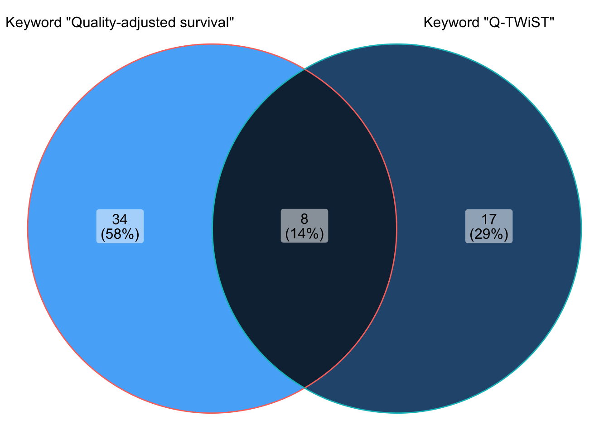

library('tidyverse')── Attaching packages ─────────────────────────────────────── tidyverse 1.3.2 ──
✔ ggplot2 3.4.0 ✔ purrr 1.0.1
✔ tibble 3.1.8 ✔ dplyr 1.0.10
✔ tidyr 1.2.1 ✔ stringr 1.5.0
✔ readr 2.1.3 ✔ forcats 0.5.2
── Conflicts ────────────────────────────────────────── tidyverse_conflicts() ──
✖ dplyr::filter() masks stats::filter()
✖ dplyr::lag() masks stats::lag()library('ggVennDiagram')
library('clinicaltrialr')
results_q_twist <- ct_read_results('https://www.clinicaltrials.gov/ct2/results?cond=&term=Q-TWiST&type=&rslt=&age_v=&gndr=&intr=&titles=&outc=&spons=&lead=&id=&cntry=&state=&city=&dist=&locn=&rsub=&strd_s=&strd_e=&prcd_s=&prcd_e=&sfpd_s=&sfpd_e=&rfpd_s=&rfpd_e=&lupd_s=&lupd_e=&sort=')Rows: 25 Columns: 27
── Column specification ────────────────────────────────────────────────────────
Delimiter: ","
chr (25): NCT Number, Title, Acronym, Status, Study Results, Conditions, Int...
dbl (2): Rank, Enrollment
ℹ Use `spec()` to retrieve the full column specification for this data.
ℹ Specify the column types or set `show_col_types = FALSE` to quiet this message.results_qas <- ct_read_results('https://www.clinicaltrials.gov/ct2/results?cond=&term=%22quality+adjusted+survival%22&type=&rslt=&age_v=&gndr=&intr=&titles=&outc=&spons=&lead=&id=&cntry=&state=&city=&dist=&locn=&rsub=&strd_s=&strd_e=&prcd_s=&prcd_e=&sfpd_s=&sfpd_e=&rfpd_s=&rfpd_e=&lupd_s=&lupd_e=&sort=')Rows: 42 Columns: 27
── Column specification ────────────────────────────────────────────────────────
Delimiter: ","
chr (25): NCT Number, Title, Acronym, Status, Study Results, Conditions, Int...
dbl (2): Rank, Enrollment
ℹ Use `spec()` to retrieve the full column specification for this data.
ℹ Specify the column types or set `show_col_types = FALSE` to quiet this message.str(results_qas)spc_tbl_ [42 × 27] (S3: spec_tbl_df/tbl_df/tbl/data.frame)
$ Rank : num [1:42] 1 2 3 4 5 6 7 8 9 10 ...
$ NCT Number : chr [1:42] "NCT01117740" "NCT02284308" "NCT03326570" "NCT00591526" ...
$ Title : chr [1:42] "Pleural Catheters Versus Thoracoscopic Pleurodesis" "Elderly With Locally Advanced Lung Cancer: Deciding Through Geriatric Assessment on the Optimal Treatment Strategy" "Effectiveness of Bronchoscopic Interventions for Malignant Airway Obstruction" "A Randomized Trial Assessing the Roles of AraC in Newly Diagnosed APL Promyelocytic Leukemia (APL)" ...
$ Acronym : chr [1:42] NA "ELDAPT" NA NA ...
$ Status : chr [1:42] "Completed" "Recruiting" "Completed" "Completed" ...
$ Study Results : chr [1:42] "No Results Available" "No Results Available" "No Results Available" "No Results Available" ...
$ Conditions : chr [1:42] "Lung Cancer" "NSCLC" "Lung Cancer" "Leukemia, Promyelocytic, Acute" ...
$ Interventions : chr [1:42] "Behavioral: MDASI Questionnaire" "Other: Blood withdrawal" "Behavioral: Medical Data Collection" "Drug: Arac" ...
$ Outcome Measures : chr [1:42] "Quality-Adjusted Survival Times|Patient Responses to MDASI" "QAS (quality adjusted survival)|Geriatric assessment|Reliable predictive elements|Predictive value|Development "| __truncated__ "Time to Any Complication Requiring Treatment|Quality-Adjusted Survival" "for patients with initial WBC counts > 10000/mm3 - the main end point for this second randomization is relapse "| __truncated__ ...
$ Sponsor/Collaborators : chr [1:42] "M.D. Anderson Cancer Center" "Maastricht Radiation Oncology" "M.D. Anderson Cancer Center" "Groupe d'etude et de travail sur les leucemies aigues promyelocytaires|University Hospital, Lille" ...
$ Gender : chr [1:42] "All" "All" "All" "All" ...
$ Age : chr [1:42] "18 Years and older (Adult, Older Adult)" "75 Years and older (Older Adult)" "18 Years and older (Adult, Older Adult)" "Child, Adult, Older Adult" ...
$ Phases : chr [1:42] NA "Not Applicable" NA "Phase 3" ...
$ Enrollment : num [1:42] 445 300 110 250 241 6600 109 40 6500 219 ...
$ Funded Bys : chr [1:42] "Other" "Other" "Other" "Other" ...
$ Study Type : chr [1:42] "Observational" "Interventional" "Observational" "Interventional" ...
$ Study Designs : chr [1:42] "Observational Model: Case-Only|Time Perspective: Prospective" "Allocation: Randomized|Intervention Model: Parallel Assignment|Masking: None (Open Label)|Primary Purpose: Treatment" "Observational Model: Cohort|Time Perspective: Prospective" "Allocation: Randomized|Intervention Model: Parallel Assignment|Masking: None (Open Label)|Primary Purpose: Treatment" ...
$ Other IDs : chr [1:42] "2010-0103" "ELDAPT" "2011-0563|NCI-2018-01276" "APL2000" ...
$ Start Date : chr [1:42] "April 2010" "July 2016" "August 25, 2011" "June 2000" ...
$ Primary Completion Date: chr [1:42] "April 2016" "July 2022" "April 1, 2019" "June 2004" ...
$ Completion Date : chr [1:42] "April 2016" "July 2023" "April 1, 2019" "June 2004" ...
$ First Posted : chr [1:42] "May 5, 2010" "November 6, 2014" "October 31, 2017" "January 11, 2008" ...
$ Results First Posted : chr [1:42] NA NA NA NA ...
$ Last Update Posted : chr [1:42] "April 11, 2016" "September 14, 2021" "April 16, 2019" "January 14, 2008" ...
$ Locations : chr [1:42] "University of Texas MD Anderson Cancer Center, Houston, Texas, United States" "University Hospital Gent, Gent, Belgium|Radiotherepiegroep, Arnhem, Gelderland, Netherlands|Caniusius-Wilhelmin"| __truncated__ "University of Texas MD Anderson Cancer Center, Houston, Texas, United States" NA ...
$ Study Documents : chr [1:42] NA NA NA NA ...
$ URL : chr [1:42] "https://ClinicalTrials.gov/show/NCT01117740" "https://ClinicalTrials.gov/show/NCT02284308" "https://ClinicalTrials.gov/show/NCT03326570" "https://ClinicalTrials.gov/show/NCT00591526" ...
- attr(*, "spec")=
.. cols(
.. Rank = col_double(),
.. `NCT Number` = col_character(),
.. Title = col_character(),
.. Acronym = col_character(),
.. Status = col_character(),
.. `Study Results` = col_character(),
.. Conditions = col_character(),
.. Interventions = col_character(),
.. `Outcome Measures` = col_character(),
.. `Sponsor/Collaborators` = col_character(),
.. Gender = col_character(),
.. Age = col_character(),
.. Phases = col_character(),
.. Enrollment = col_double(),
.. `Funded Bys` = col_character(),
.. `Study Type` = col_character(),
.. `Study Designs` = col_character(),
.. `Other IDs` = col_character(),
.. `Start Date` = col_character(),
.. `Primary Completion Date` = col_character(),
.. `Completion Date` = col_character(),
.. `First Posted` = col_character(),
.. `Results First Posted` = col_character(),
.. `Last Update Posted` = col_character(),
.. Locations = col_character(),
.. `Study Documents` = col_character(),
.. URL = col_character()
.. )
- attr(*, "problems")=<externalptr> # List of items
x <- list('Keyword "Quality-adjusted survival"' = results_qas$`NCT Number`,
'Keyword "Q-TWiST"' = results_q_twist$`NCT Number`)
# 2D Venn diagram
ggVennDiagram(x) + theme(legend.position = 'none')